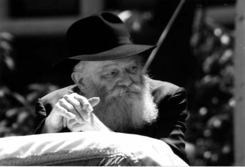

Gold Coins from the World to Come
A compilation of lessons the Rebbe gleaned from stories of Chazal about Rashbi and customs associated with Lag B’Omer * How is the story about the Jew with two myrtle branches connected with preparing for Moshiach? * How do we draw down the revelation of p’nimius ha’Torah? * Why do children play wit

IT’S SUFFICIENT TO RUN WITH TWO MYRTLES
The Gemara says that when Rashbi and his son left the cave, they saw people engaged in mundane matters, plowing and sowing. They were upset by the people’s involvement in temporal things rather than everlasting things. On Erev Shabbos towards evening they came across a man holding two bundles of myrtles and they asked him: What are those for?
He said: In honor of Shabbos.
They said: Why isn’t one enough?
He said: One corresponds to “zachor” and one to “shamor.”
Rabbi Shimon said to his son: See how mitzvos are beloved to the Jewish people!
And they were appeased.
From this story we can learn an important lesson for our times. The work of Rashbi and his son when they emerged from the cave was the revelation of p’nimius ha’Torah through which the Geula comes. As it says, the Jewish people will go out of galus with the Zohar.
Since their work in this world began following the incident with the Jew (as before that, they were upset with the situation in the world and consequently, did not work towards perfecting the world), it turns out that the true and complete Geula began with this incident!
From this we derive a lesson for our avoda, which is to complete the avoda that began back then, i.e. bringing the Geula. Today too, it is Erev Shabbos towards evening, so close to the Geula. Therefore, we need to be ready for the Geula in every respect, in both “zachor” and “shamor.”
However, since we are so close to evening and it is possible that there is not enough time to fix all the things that need fixing, the lesson from the story is this: it is enough to run with two myrtles! In other words, you must decide that you want to fulfill both the “zachor” and the “shamor” and to begin with a small action like taking two myrtles. By doing this, you are already working to bring the true and complete Geula to the world.
In addition, as far as taking a myrtle in particular, a myrtle has a good fragrance, as we find with the Dalet minim that the hadas has no taste but has a pleasant scent. Fragrance helps even when someone is in a faint, for when someone has fainted you give him a strong-smelling item which arouses him.
The idea is that in order to arouse someone from a spiritual faint, there needs to be the idea of the “scent” of p’nimius ha’Torah. This brings about the coming of Moshiach who is also associated with scent as it says, Moshiach will judge with the sense of smell.
This is the idea of preparing by taking a myrtle on Erev Shabbos, that the way to prepare for Shabbos, i.e. the Geula, is through the inyan of a hadas, the scent – the revelation of p’nimius ha’Torah, spreading the wellsprings outward.
(Sicha Lag B’Omer 5711)
HOW IS THE REVELATION OF P’NIMIUS HA’TORAH DRAWN DOWN?
In the Zohar it says about Rashbi: “Rabbi Shimon went to a town and encountered Rabbi Abba and Rabbi Chiya and Rabbi Yossi … Each one said something. Rabbi Abba said: “And Hashem said to Avram …,” Rabbi Chiya said, “The land that you are lying on …,” Rabbi Yossi said, “This time, I will thank G-d …” As it specifies there, each one expounded in connection with these verses in praise of Rashbi.
The explanation is: Rabbi Shimon went to a town – He went to a city in order to rectify the world and as we find in the Gemara that when he left the cave he looked for those places that needed rectification in order to rectify them.
He encountered Rabbi Abba and Rabbi Chiya and Rabbi Yossi and each one said something in his praise: The general idea of saying praise is to inspire Rashbi to reveal the secrets of Torah to them. As is known, the general idea of saying praise is to reveal and draw down the thing which you are praising. For example, in saying the praise of Hashem, which Hashem certainly doesn’t need, we are trying to bring about the revelation of the flow from Above.
Since the three Tanaim spoke in praise of Rashbi in order to draw down the inyan of p’nimius ha’Torah, obviously the way to bring about the drawing down of p’nimius ha’Torah is through the three aspects of these three Tanaim, which are the three aspects of Avrohom, Yitzchok, and Leah (which is why each one expounded on a verse that was said about the one of these three that his soul aspect corresponded to):
The order of drawing down p’nimius ha’Torah includes three things: drawing down from a very lofty place, and in a way that it penetrates all things, to the extent that it is drawn down into action and does not remain in the realm of study alone.
These are the three aspects of Avrohom, Yitzchok, and Leah: Avrohom represents the highest level of all as Chassidus explains that his level was that of “intellect that transcends every [human capacity for] ideation.” Yaakov represents “Yud Akeiv” – drawing the flow down so that it affects all details, even the lowest, to the extent of the heel. And Leah represents action, for through her is accomplished actual physical reproduction.
(Sicha VaYeitzei 5743)
THE FIRST THING YOU DO WHEN EXITING A CAVE
The Gemara says that the first thing Rashbi did when he exited the cave was to seek what needed correcting in the world. He did this himself and did not ask others to do this.
Just think: We know that due to the pain he had in the cave, he achieved great spiritual heights until he reached a level that was incomparably greater than his previous level. As the Gemara says, when he left the cave he met Rabbi Pinchas ben Yair who said, “Woe that I am seeing you in this condition” (since he saw how Rashbi had suffered in the cave).
Rashbi replied: “On the contrary, fortunate are you to see me this way for if you did not see me in this condition, you would not be finding in me such” – in other words, without being in the cave, you would not have found all these wondrous qualities in me. As the Gemara elaborates, before he entered the cave, Rashbi would ask Rabbi Pinchas ben Yair a question and R’ Pinchas would give him twelve answers. After he left the cave, R’ Pinchas would ask him a question and Rashbi would respond with twenty-four answers! In other words, he rose from the level of “questioner” to the level of “responder.” As Chassidus puts it, it was because a higher level of Torah shone forth within him, as the Torah is higher than all contradictions and concealments.
We see from here how great Rashbi became after being in the cave and after all that, what was the first thing he did? Not his own avoda and contemplating the secrets of the Torah etc. but the opposite, avoda with the world. He immediately sought a way to rectify the world.
This story is part of Torah, “Torah from the root meaning to teach,” and in a way that pertains to every Jew. This story is included in the Aggadata portion which is in Ein Yaakov, something that even simple people study.
(Sicha Emor 5747)
GOLD DINARS FROM THE WORLD TO COME
The Midrash says that Rashbi took his students to a valley and said: “Valley, valley, fill up with gold coins,” and it began to flow with gold coins!
Then Rashbi said to them: “If you seek gold, take gold. But you should know that whoever takes it now, is taking his portion in the next world.”
The simple meaning is that Rashbi did not want them to take the gold coins. On the contrary, he wanted to prevent them from doing so since taking them would mean they would lack in the next world.
However, we can say the opposite, in a positive sense. Rashbi empowers all of us to engage in Torah study without any hindrances and obstacles, in a way of “Torah is his occupation.” As for the seeming necessity to deal with worldly matters for the purposes of parnasa, we need to learn from this story. Rashbi can make even a low place, a valley, into a situation wherein Torah can be studied without interference since the valley fills up with gold coins that amply supply all one’s material needs. Furthermore, it happens without the need for prayer or the saying of words of Torah. It is enough to order the valley to fill up with gold coins and it immediately fills up so that everyone can take what he needs!
When he said whoever takes, is taking his share in the World to come, the opposite explanation can be given – that the gold coins that are taken are not merely gold coins but gold coins of the World to Come! Whoever takes them merits having not just gold coins, but gold coins of the World to Come as they are drawn down into this world.
(Sicha Behar 5746)
THE RAINBOW THAT ANNOUNCES THE COMING OF MOSHIACH
There is the Jewish custom “which is Torah,” that children go out to the fields on Lag B’Omer and play with bows and arrows.
It says in the Zohar, “don’t anticipate the coming of Moshiach until you see a rainbow.” In other words, seeing a rainbow is a sign for the coming of Moshiach. Since Lag B’Omer marks the passing of Rashbi through whom a pipeline was opened for the revelation of p’nimius ha’Torah which precedes the coming of Moshiach, therefore a bow is played with on this day to hint to the rainbow which heralds Moshiach’s coming.
(Sicha Lag B’Omer 5711)
LEARNING IN A WAY OF “KESHES”
Another reason, which has to do specifically with the students who go out to play is:
On Lag B’Omer the students of Rabbi Akiva stopped dying. Their deaths had occurred because “they did not treat one another with respect,” and so this day was established for joy and commemoration particularly amongst the students, those who study Torah, to know and remember that Torah must be learned in the opposite manner – with respect for one another. This is the behavior by which the supernal accusation against Rabbi Akiva’s talmidim ceased.
These two behaviors are derived from two ways of studying Torah:
When a person approaches Torah study with the feeling, knowledge and awareness that Torah is Hashem’s wisdom, then his enthusiasm in learning comes from his learning and understanding of Hashem’s Torah and not, G-d forbid, from his own ego. Consequently, there is no reason to be annoyed with another when he understands something differently. Furthermore, if his learning partner proves that he [the learning partner] is right and that he erred, he will be grateful to the learning partner for setting him straight.
It is only when the learning is done with a sense of ego that he will get annoyed if a friend corrects him. This is where the phenomenon of “they did not respect one another” came from.
The way to achieve the kind of learning that is without ego is the idea of a rainbow. In Chassidus it explains that weapons can be divided into two sorts; a sword and a bow. The difference between them is that a sword can be used only in close proximity while a bow is used at a distance.
The idea in avodas Hashem is that it is not enough that we fight enemies that are close to us, i.e. those that everyone knows are enemies. We need to beware of those things that are at a distance, things that seemingly have nothing to do with Torah study. It is when we are concerned about these matters too that we can be assured that the learning is proper, without ego and without the resultant “they did not treat one another with respect.”
(ibid)
anonymous. "Gold Coins from the World to Come." Beis Moshiach, no. 833 (May 8, 2012).